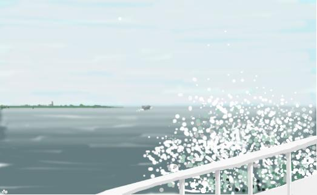

La profitulo - Nescio
Tio ĉi estas traduko de sepĉapitra Nederlanda novelo `De uitvreter' verkita en
1910 de Nescio
(latine por `Mi ne scias'), plumnomo de J.H.F. Grönloh. Mi tre ŝatus
viajn rimarkojn pri tiu ĉi teksto, do retpoŝtu min.
Tiu ĉi afero haveblas en kelkaj formatoj:
Aliaj formatoj estas livereblaj post peto ĉe mi. Post promeso ke vi efektive legos, mi eĉ
pretas sendi al vi senpagan paperan version.
I

Escepte tiun viron, kiu trovis la Sarfati-straton en
Amsterdamo la plej bela strato en Eŭropo, mi neniam konis pli
miraklan ulon ol la profitulon
miraklulo
Onidire, tiu eĉ pli mirakla ulo estis la aŭtoro
Frederik van Eeden. Lia verkaĵo `La malgranda Johano' estis esperantigita.
.
Estis la profitulo, kiun surhavantan siajn malpurajn
ŝuojn oni trovis en sia lito, kiam oni vespere
malfrue hejmiĝis. La profitulo, kiu fumis nesiajn cigarojn, kaj uzis nesian
tabakon kaj bruligis nesian karbonon kaj rigardis en nesiajn ŝrankojn kaj
eluzis nesiajn ŝuojn kaj surmetis malpropran palton, kiam li devis iri hejmen
tral pluvo. La profitulo, kiu ĉiam venigis ion je alies nomo; kiu kvazaŭ reĝo
trinkis ĝinon sur la teraso del kafejo `Hollandais' kontraŭl mono del aliaj; kiu
prunteprenis ombrelojn, kiujn li neniam redonis; kiu tiom hejtis la brokantan
fornon de Bavink, ke ĝi krevis; kiu portis la duoblajn kolumojn de sia frato
kaj pruntedonis librojn de Appi, kaj vojaĝis al eksterlando, kiam li denove
trompis sian patron, kaj portis kostumojn, kiujn li neniam pagis.
Lia nomo estis Japi. Neniam mi sciis lian familian nomon. Li venis kun
Bavink, kiam tiu revenis el la urbeto Veere en Zelando.
Tutan someron Bavink pentris en tiu ventoplena insulara provinco. En Veere
li unuafoje vidis Japi-n. Japi tie nur sidis. Jam kelkajn fojojn Bavink
pensis: kia ulo do tiu estas? Neniu sciis, ĉiam li troviĝis ĉel
akvobordo. Tie li sidadis, dum horoj, senmove. Jel dekdua kaj jel dekoka
li iris internen por horo dum kiu li manĝis; dum la cetero del tago li
sidadis. Tio daŭris proksimume tri semajnojn; post tiuj Bavink ne plu
vidis lin.
Kelkajn tagojn poste Bavink venis el Roterdamo, la granda havenurbo en la
proksimo de Zelando. Ĉar foje li sentis bezonon esti inter multaj
homoj. Promeninte kelkajn tagojn preter la havenoj, lin nun tio ege
ektedis. Sur la ŝipo, kiu lin tral delto de sudokcidenta Nederlando
reportis al Zelando, jen li sidis denove. Iomege kaj malvarmige ventis,
tiun matenon; kaj la akvo fluis per blankpintaj ondoj. Fojfoje ĝi
disgutigite saltis trans la pavezon sur la pruon. La vitraj svingopordoj
sur la pruo estis fermitaj; neniu sidis sur la pruo. Nur Japi sidis tie,
fikse rigardis trans la pavezon kaj kompatveke malsekiĝis. `Vidu,' Bavink
pensis, `jen ja tiu sama ulo.' Li ekstaris apud li. La ŝipo tangis kaj
baŭmis. Japi sidis sur sia benketo, tenis sian kaskedon, kaj lasis la
akvon malsekigi lin. Iom daŭregis antaŭ ol li rimarkis, ke iu staris apud
li. `Bona vetero, ĉu ne, majstro,' Bavink diris. Japi lin rigardis per
siaj grandaj bluaj okuloj kaj senĉese mantenis sian kaskedon. Tuj granda
kiomo da akvo plaŭdis enŝipen, la gutoj estis sur lia vizaĝo.
`Sufiĉe,' Japi diris. Brufalis la pruo sur la akvon kaj
skuis. Iu sinjoro vane klopodis malfermi la pordon del vitra salono, kontraŭ
kiu blovis la vento. `Ni iras laŭhorare,' Bavink diris, por ion diri. `Ĉu?'
Japi diris, `Mi ne konscias tempon.'
La interparolado iom malglatis. Japi rigardis en la ondojn. Bavink
rigardis la grizan kaskedon de Japi kaj demandis sin kia ulo tiu
estus. Subite Japi diris: `Jen vidu, ĉielarko en la akvo.' Videblis
parteto de ĉielarko en la akvo, en la ĉielo neniu estis. Ankoraŭfoje Japi
rigardis Bavink-on per siaj grandaj bluaj okuloj kaj subite parolemiĝis.
`Mi diable ĝuas ĉi tie,' li diris. `Estas ja domaĝe, ke ne ĉiam tiel ĉi
restos.' `Alvenos ni post malpli ol horo,' Bavink diris.
`Ĉu vi iras al Zirikze?' Japi demandis.
`Nu jes, tio signifas,' Bavink diris, `ke ĉi vespere mi pluvojaĝos al
Veere.' `Ĉu?,' Japi diris, `Ĉu vi tie gastloĝas?'.
`Jes, mi tie gastloĝas kaj ĉu ne vi estas tiu sinjoro
el Amsterdamo, kiu ĉiam sidas ĉel akvobordo?' Tiam Japi ne povis ne ridi kaj
diris: `Vere, mi ofte sidas ĉel akvobordo, ĉiam estas iom troige.
Dumnokte mi kuŝas en mia lito, mi bezonas horon por vestigo kaj
matenmanĝo, dum duona horo mi tagmanĝas kaj jel sesa mi denove devas manĝi. Sed
mi ofte sidas ĉel akvobordo. Por tio mi venas al Zelando. Eĉ ankoraŭ mi multe
tro multokupiĝas. Pasintsemajne mi estis en Amsterdamo. Mi ja devis, la mono
elĉerpiĝis.'

`Ĉu estas vi Amsterdamano?' Bavink demandis. `Jes,
dank' al Dio,' Japi diris. `Ankaŭ mi,' Bavink diris. `Vi ne pentras, ĉu?'
Bavink demandis. Tio estis stranga filistra demando, sed Bavink ade pensis nur:
kia ulo do tiu ulo estus? `Ne, dank' al Dio,' Japi diris, `kaj mi ankaŭ ne
verkas poemojn kaj mi ne estas naturamiko nek anarĥiisto. Dank' al Dio mi estas
tute nenio.'
Tio ja plaĉis al Bavink.
La ŝipo baŭmis, ĵetiĝis, tangis kaj ruliĝis; la akvo
plaŭde torentis trans la pavezon; neniu alia troveblis sur la ferdeko. Antaŭen
la akvo malhavis videblan limon, kaj estis plena de blankaj ondopintoj, la
ombro de granda nubo estis flosanta insulo; en la malproksimego antaŭ ili nigra
kargoŝipo pene tangante navigis. `Vidu,' Japi diris, `la `Urbo Gento'.' Oni
vidis en la malproksimo la akvon suprenflugi ambaŭflanke del pruo; ĉirkaŭl
helico oni vidis ĝin moviĝi kaj bruetadi kaj ŝaŭmi. Kavaj kuris la ondoj kun
akraj krestoj, verdaj kaj bluaj kaj flavaj kaj grizaj kaj blankaj, laŭl
profundeco kaj laŭl spegulado del nuboj, nenie kaj neniumomente
samaspektaj. Malgranda trenŝipo trenis barĝon kaj du kanalŝipojn.
`Ne,' Japi diris, `mi estas nenio kaj mi faras
nenion. Verdire mi ankoraŭ faras multe tro multe. Mi okupiĝas pri rezignaciado.
Plej bone estas, ke mi nur senmove sidu, moviĝi
kaj pensi estas bone por malsaĝuloj. Ankaŭ ne pensas mi. Estas domaĝe, ke mi
devas manĝi kaj dormi. Mi preferus kaj dumtage kaj dumnokte senĉese sidadi.'
Bavink ekinteresiĝis pril kazo. Li nur
kapsignis. Ankoraŭ Japi tenis sian kaskedon per sia dekstra mano, lia dekstra
brako apogis sin sur la pavezo. Tiom ventis, ke Bavink devis teni sian manon
flanke de sia nazo por povi spiri. Japi tie nur sidis, kvazaŭ li estus
hejme. Tiam Japi rakontis, ke li intencas resti ankoraŭ kelkajn semajnojn en
Veere, ĝis kiam lia mono elĉerpiĝos.
Pentrado ŝajnis al li agrabla, se oni bone povus. Li
povas nenion kaj tial li nenion faras. Oni ja ne povas montri la aferojn, kiel
oni spertas ilin. Li havas nur unu deziron: rezignaciado, fariĝi sensenta pri
malsato kaj dormemo, pri malvarmo kaj malsekeco. Tiuj estas oniaj grandaj
malamikoj. Eterne ĉiam oni devas remanĝi kaj redormi, redevas oni fuĝi el la
malvarmo kaj refariĝas oni malseka, mizera aŭ dormema. Male, tiu akvoamaso bone
fartas, tiu nur ondas kaj spegulas la nubojn, ade ŝanĝiĝas sed tamen restas
sama. Nenio ĝenas ĝin.
Dum tiu tuta tempo, Bavink staris rezistante la venton
kaj sin apogante sur sia bastono kaj nur kapsignis al Japi. Tio ne estas tute
freneza, li pensis. Li seke demandis, ĉu ankaŭ Japi pluvojaĝos al Veere. Kaj
tiel la interparolado ektemis pril aliaj Zelandaj urbetoj kiel pri Zirikze, pri
Midelburgo, pri Arnemejden kaj pri ĉiuj tiuj lokoj en kiuj ili ambaŭ ĉiel kaj
oftege rondiris kaj staris kaj sidis. Ĉar Japi tamen faris ion alian en sia
vivo ol sidi ĉel akvobordo en Veere. Kaj jam tiam Bavink rimarkis ke Japi ne
nur povas piediri kaj stari kaj sidi, sed ankaŭ rigardi. Kaj daŭrege babiladi.
Kaj kiam ili kune elŝipiĝis post alveno, tiam Japi fingromontris sudokcidenten,
al la dika turo del urbo Zirikze, kiu malforte videblis ĉel horizonto kaj
diris: `Dika Jan, tiu malnova pacienca Dika Jan, ĝi ankoraŭ estas. Mi jam
supozis. Kaj pravis mi, ĝi ankoraŭ estas.' Kaj tiam Bavink demandis, ĉu li ĉiam
tiom amuziĝas kaj tiam Japi diris: `Jes,' kaj nenion plu. Kaj kiam ili estis
alvenintaj en Zirikze kaj eltramiĝintaj, tiam Japi klakadigis siajn plandumojn
sur la varmegaj pavimŝtonoj de iu senombra strateto, kiu bakiĝadis en la
suno kaj li streĉis sin kaj diris ke la vivo tamen estas diable plezura. Kaj
tiam li minacis la sunon per sia promenbastono kaj diris: `Jen tiu suno, ĝi nur
brilas, sed ĝi malleviĝas, ne plu leviĝas ĝi, jam estas post la dekdua, ĝi
malsupreniĝu: ĉi vespere remalvarmetos. La homoj surpriziĝus, se ĝi ne
malleviĝus. Agrable varmas, ĉu ne, miaj vestoj gluiĝas sur mia korpo. La
maraero fluas el mia kolumo.'
Kaj tiam evidentiĝis ke oni ne tiom laŭlitere komprenu
tiun rezignaciadon.
Ĉel manĝotablo Japi estis superabunde parolema. Li
parolis kiel triopo, manĝis kiel sesopo. `Tiu maraero fosas,' oni diras en
Veere. Li trinkis kiel alia sesopo kaj kantis la tutan kanton de Nancy
Brick. Koncize, li estis tre agema kaj brua, kaj Bavink opiniis
tian ulon multvalora kiel oron.
Kaj tia li estis. Posttagmeze li kunirigis Bavink-on al
la urbaj kanaloj kaj igis lin trifoje ĉirkaŭpiediri Zirikzeon. Lia buŝo neniam
haltis kaj lia promenbastono montradis kaj montradis kaj kiam la Zirikzeanoj
haltis kaj rigardis, tiam li iris al ili kaj ilin alparolis per `junulo' kaj
demandis ĉu ili ja sanas kaj tiam frapis ilian ŝultron, kaŭzante ke Bavink
tenis siajn korpoflankojn pro ridado. Tion Japi bone kapablis: venki la
bonvolan bonmanieran Holandan publikon, kiu toleras neniun, kiu aspektas ne
minimume same malinteligenta aŭ aĉa kiel ili mem, kaj mokas kaj laŭte parolas
pri oni, kvazaŭ ne jam jarcentojn paroĥestroj kaj pastoroj okupiĝus pri edukado
del popolo en eĉ la plej malgranda vilaĝo. Japi estis viro kiel ĉara ĉevalo kaj
se necese li ekbatadis kun lerteco, per kiu li superas eĉ la plej maldelikatan
krudulon. Tio tamen ne okazis en Zirikze. La Zelandanoj estas pli malpli
akcepteblaj. Japi kutimis diri: `Mi nur bedaŭras tion, ke en Zelando ne foje
okazas iom da tumulto.'
II
Du tagojn Bavink kaj Japi sencelumis en Veere, kaj jam
tiam ili nomis unu la alian `knabo' kaj cidiris. Dum horoj ili kune sidis sur
la tegmento del Hospitalo de kiu ili rigardis la ĉirkaŭaĵon de Veere, la Veeran
havenenirejon kaj la akvofluojn, la enfluejon de la orienta Skeldo kaj la
dunojn en la okcidento. Kaj jen denove ankaŭ la Dika Jan, la turo de Zirikze,
nun en la nordo. Kaj jen oni vidis la urbon Goes kaj Longan Jan, la turon del
urbo Midelburgo, la akso de Zelando, la koro de ties mondo. Kaj la tajdo
envenis, kaj eliris; la akvo leviĝis, kaj malleviĝis. Kaj ĉiun vesperon la lama
havenestro venis, kaj unue ŝaltis la verdan lumon sur la Norda Kapo, la fostara
kontraŭmara ŝirmilo; kaj poste li devenis tiun, kaj tiam li devis ĉirkaŭiri la
tutan haveneton kaj tiam oni revidis lin ĉel turo, kaj tiam li malfermis la
lignan latbarilon kaj grimpis la lignan ŝtuparon kaj ankaŭ ŝaltis la lumon en
la turo. Kaj tiam Japi diris: `renove unu tago, majstro,' kaj tiam la lama
havenestro diris: `Jes sinjoro, renove unu.' Kaj kiam oni rigardis norden al
la tiea insulego, tiam oni vidis la turnantan lumon ŝaltiĝi kaj malŝaltiĝi. Unu
horon maren, la lumbuo flosis kaj brilis kaj estingiĝis. Kaj l' akvo plaŭdis
kaj leviĝis kaj malleviĝis, kaj tral nokto la nevidata suno ŝoviĝis preter la
Nordo. Kaj la lasta lumo del tago kunŝoviĝis preter la Nordo kaj fariĝis la
unua lumo del nova mateno. Tiel unu tago tuŝis la alian, kiel ĉiam estas en
Junio.
Por la tero la afero estis sufiĉe simpla. Tiu simple
rotaciadis ĉirkaŭ sia akso kaj daŭrigis sian orbiton ĉirkaŭl suno kaj mankis al
ĝi scio pri ĉio ĉi. Sed la surĝiaj homoj penege kaj zorgoplene kaj kun multe da
malĝojo trasuferadas la tagojn, kvazaŭ sen tiuj penegoj, tiuj zorgoj kaj tiu
malĝojo ne eblus vesperiĝo.
Japi havis pli realisman konvinkon. Per si mem la suno
reenmariĝas ĉel Zelandaj dunoj en la okcidento. Sed Bavink foje profunde
prosuferadis.
Bavink estis ulo, kiu ordinare senlace laboras. La homoj
opiniis lin sufiĉe multepova. Li ridis pri tio. Se li ne devus, tiam li vendus
nenion; siajn plej bonajn pentraĵojn li flankenmetis, li ne plu rigardis tiujn,
ĉiam malkontente. Dum la tempo ke li laboris, li bonfartis, sed post fino de sia
laboro li pro ĝi sentis doloron; foje li estis tute elĉerpita. Se la homoj
scius, kiel li rigardas la aĵojn, ili priridus liajn fuŝaĵojn, ridus pri lia
malagrabla aĉfuŝa reproduktaĵo de ilia moŝta bieno. Tutajn periodojn Bavink
faris nenion ajn, li simple ne regis sin, agrablete rigardis la aĵojn kaj
trapromenetis ilin, trovis la aĵaron tiom `diable bela', kiel li tion
esprimis. Ke ekdoloris en lia kranio kiam li pensis pri ĉiuj siaj vanaj
klopodoj, pri liaj `meritplenaj pentraĵoj'. Meritplenaj pentraĵoj! Vomiga tiu
lia penso estis. `Meritplenaj pentraĵoj', ili diris. Ili estas tre spertaj. Ja
rimarkeblas ke ilin ne trompis Dio, kaj ilin ne skuegis kiel lin.
Li deziris ke li kapablu ne pentri, sed tio tiom simpla
ne estis: kiam io enestas, tiam tio volas eliĝi. Kaj tiam rekomenciĝis la
torturo, labori, labori kaj tage kaj nokte, tage pentri, nokte pricerbumi, ne
devojiĝi, senĉese labori, zorgi ke nun la aferoj estu bone tenataj. Tiam li
apenaŭ dormis kaj apenaŭ manĝis; komence li senhalte fumis enorman multon da
cigaroj sed post la unua tago, ankaŭ tio ĉesis. Tiam li havis momentojn del
plej granda feliĉo, kian eĉ la laceca sinkado en ĉiun tiun `bongustan belecon'
ne povis doni al li. Kaj jen tiu venis por rigardi, kaj alia, kaj jen ili
duopaj, triopaj, kaj kvaropaj staris malantaŭ li kaj rigardis kaj kapsignis kaj
fingromontris. Kaj tiam subitis la fino. Tiam li diris: `Damne,' kaj ekkuŝis
sur sia benklito, igis alporti guton da juniperbrando, kaj faris nenion
plu. Tiam, post kelkaj tagoj, la pentraĵo estis metita ĉel aliajn. Dum la
tagoj, kiuj sekvis tion, li estis kompatinda, laca, mizera, nekomprenebla,
malsana, kaj li rekomencis `treni', kiel li tion nomis: nenion fari,
maldiligenti, ĉirkaŭpromeni. Kiam li bezonis monon, tiam li elprenis ion ajn el
`rubaro', kaj tiam li elektis `pentraĵaĉon' por kiu `iu ja pagos ion' kaj tiam
li tiun vendis. Neniu povis malkutimigi tion de li. Li simple tia estis. Liaj
forto kaj malforto estis nerompeble kunligitaj. Kaj kiam li estis vendinta ion,
tiam li senpere enpoŝigis la monerojn, tiam li tintigis la guldenojn kaj la
ŝtatajn talerojn, tiam li piediris en la Kalverstrato fajfante kanton. Tiam li
gajeme salutis per sia mano super sia kapo, kiam oni renkontis lin. Tiam li
familiare ekstaris apud vi, mistereme montris al vi la `kejlojn', laŭte ridis
kaj diris: `Kiaj kompatinduloj, ĉu ne?' Li neniam akceptis paperan monon: ne
eblas tion tintigi. Oron li deziris, kaj arĝenton, kaj se fariĝis tro multe por
li, tiam `li iam poste revenos por preni la reston'.
Jen kia Bavink estis; kaj vi komprenas ke sinjoro kiu
ekzercas sin en rezignaciado forte interesis lin. Tiu povas instrui lin. Tia
ulo kiu ŝatas refreŝiĝi en la vento, lasi la malsekan salan venton saturi liajn
vestojn kaj lian korpon, kiu gustumis siajn lipojn per sia lango ĉar li `tiom
diable multe' ŝatis tiun marguston; kiu vespere snufadis siajn manojn por flari
la maron. Tia ulo kiu kontentis pro tio ke li ekzistis kaj sanis kaj
kontentomontrante movis sin inter la ĉielo de Dio kaj la tero de Dio, kaj
trovis tion malsaĝa ke la homoj tiom penadis, kaj laŭte mokridis pri ili kaj
kiu eterne kun beata rideto silente ĝuis la akvon kaj la nubojn kaj la kampon
kaj lasis la pluvon tute malsekigi lin, nerimarkante tion kaj tiam diris: `Al
mi ŝajnas ke mi estas malseka,' kaj ridis. Ulo, kiu povis guste ĝui multekostan
tagmanĝon kaj guste ĝui multekostan juniperbrandon kiel la unua en Nederlando,
kaj alitempe marŝante (ĉar li ne ĉiam sidis, foje li dum tagoj marŝadis)
ĉiutage manĝis sekajn bulketojn kaj ĝislarme emociiĝis pro tio ke en la kampo
`tia peceto de pano povas tiom bongusti'.
Kaj kiam Bavink laboris, tiam Japi ĉesidis en la herbejo
aŭ sidis endome, inverse sur seĝo kaj fumis. Kaj kiam ili estis endome, tiam
Japi havis duan seĝon ĉea sur kiu staris glaseto da brando, al kiu li fojfoje
etendis sian manon. Kaj li zorgis ke plulaboradu Bavink. Al neniu alia Bavink
iam diris iun ajn vorton, kiam li laboris; kun Japi li parolis.
`Diable ba,' Japi diris, `Ja neniomas la gravaĉo, ĉu
estas bona aŭ ne, vi faras tion, kion vi kapablas, vi nur estas
kompatindulo. Vi do ne povas ne fari. Ja ne ĝenas la aferojn tio ĉu vi ne povas
precize bildigi ilin tiaj kiaj ili estas. Kaj la homoj, tiuj ja komprenas nenion. Ne
pril aferoj, ne pri viaj pentraĵoj kaj ne pri vi. Ankaŭ mi multom pli bone
povus uzi mian tempon ol ĉi tie sidi drinkanta kaj spektaĉadanta tiun
pentroaferaron. Ĉu mi malprofitas?' `Ne, tio nebonas,' li poste diris,
`multe tro blua; vi ja memoras tion, kion ni hieraŭ interkonsentis? Multe tro
blua, virego. Ĉu vi pensas ke vi tiel estus ekfarinta se ĝi havus tiun strange
bluan koloron?'
Japi orvaloris por Bavink. Bavink kuntiris lin
ĉien. Bavink igis Japi-n ĝis tio, kio li estis, kiam Bavink prezentis sin kaj
lin en Amsterdamo.
Jam tre baldaŭ Japi estis pli ol iomete sen
mono. Neniel Bavink lasus lin foriri. Japi mem serĉu en la
`rubaro'. Kaj tiun metion Japi rapide lernis. Neniam antaŭe la
`ŝutloko' tiom profitodonis. Kaj ekde tiam Bavink pagis ĉion aŭ
preskaŭ ĉion. De tempo al tempo Japi poŝte ricevis iom da mono el siaj
gepatroj. Sed tiu estis nemenciinda, ĉar foje la sinjoroj vivis kiel
kapitalistoj; kaprice ili iris por kelkaj tagoj al Amsterdamo, al Bruselo, al
Parizo, al Luksemburgo; dum du semajnoj ili estis en Normandio. Japi kutimis
kunporti malgrandan ŝutlokon: `ido del granda ŝutloko', kiel li tion
vortigis. En Francio kaj Belgio li alparolis homojn sur la stratoj, kaj
insultis ĉel domoj. Eĉ ne la plej sensignifan tiusimilan agon Bavink tolerus de
iu alia. Sed neniu alia sciis la arton de teni Bavink-on vivanta, kiel Bavink
diris. Lia konversaciivo estis neelĉerpebla. Kaj li havis memoron por pejzaĝoj,
kiu limas miraklecon. Li konis ĉion, kio estas preter la fervojlinio inter
Midelburgo kaj Amsterdamo, ĉiun kampon, ĉiun fosaĵon, ĉiun domon, ĉiun aleon,
ĉiun arbogrupon, ĉiun strieton da erikejo en la provinco Brabanto, ĉiun forkon
del trako. Kiam oni veturis horojn en malhelo kaj kiam Japi dum ĉiu tiu tempo
dormis tirita sur la benko, se oni tiam vekis lin kaj demandis `Japi, kie ni
estas?' tiam oni iomete atendu ĝis li bone maldormis kaj post tio li iomtempe
aŭskultis la sonon del veturado kaj tiam li diris `Mi pensas ke ni estas ĉel
urbo Etten-Leur.' Kaj tiam ankaŭ evidentiĝis ke li pravis. Li povis precize
sciigi kiel je jena tago jenaj arboj ĉe urbo Zaltbommel ombras jenan aleon kaj
kiuj ŝipoj preterpasis je jena momento en pasinteco en kiu oni kun Japi veturis
sur tiu certa fervoja ponto super la rivero Lek. Kaj alifoje li sidis apud la
fenestro atendante: `Nun ĉi tio venos, nun tio venos'. Dum horoj. Kaj kiam li
vidis ion, kion li eksterordinare bone konis, tiam li kapsignis kaj ridis. Aŭ
li diris: `Vidu, tiu arbo estas for'; aŭ: `Ho, nun ĝi havas pometojn, tiujn mi
lastafoje ne jam vidis.' Aŭ: `Antaŭ du semajnoj la suno estis precize
malantaŭl supro de tiu arbo, nun ĝi estas iom maldekstra de tiu arbo, kaj
iomete pli malalta, tion kaŭzas ke estas dek kvar tagojn poste kaj ankaŭ ke ni
estas dek minutojn tro malfrue.'
III
Tiel statis kiam vintrokomence ili venis al Amsterdamo
kaj iun vesperon Japi sidis en mia ĉambro, fumadanta unu cigaron post la alia,
kiuj preneblaj kuŝis sur mia tablo, miaj cigaroj.
Tiun vesperon min estis koincide vizitinta la altkreska
Hojer, kiu hazarde venis refoje el Parizo kaj nun pri siaj pentraĵoj
kaj pril knabinoj fanfaronis, surhavanta pajloĉapelon, en novembro, kaj
salmkoloran palton. Li estis rakontanta nekompreneblan rakonton pri juna
sinjorino kaj dungita koĉero kaj korbo de angiloj, kiam ni aŭdis movbruon sur
la ŝtuparo. Estis en popola kvartalo, kutime oni povis senpere supreniri, la
ĉestrata pordo plejofte estis malferma.
Unue Bavink eniĝis kaj diris: `Kiel vi fartas, virego?
jes, estas mi mem. Ha, ha, Hojĉjo. Kiel vi, Hojĉjo, ĉu ankoraŭ fanfaronantas?
Do, ankoraŭajn elkorajn gratulojn. Ankaŭ al vi, Kukbakist, ke vi ĉeestu ankoraŭ
longtempe.' Sur la sojlo Japi staris. Ili kunportis odoron de sala akvo kaj
herbo. `Envenu, virego, envenu' invitis Bavink, en mia subtegmentejo.
`Ho sinjoro,' Hojer diris, `komplezu fermi la pordon
malantaŭ vi.' `Kukbakist,' Bavink diris, `jen Japi, virego per kiu oni povas
plezuri. Hojer ankoraŭ estas same ĝentila kiel ĉiam, mi aŭdas.' `Sidiĝu, Japi,'
Bavink invitis, pumfaligante sin sur la solan seĝon kiu estis libera; `prenu
tiun kesteton.' Staris eŝafodkolora
eŝafodkolora
Pasintece, eŝafodoj kutime estis farbitaj palruĝaj
matrosa kesto, en kiu mi konservis puran subĉemizon kaj la leterojn de mia
fratino. `Atendu, mi helpos al vi,' mi diris. Tiam ni, Japi kaj mi, ŝovis la
keston ĉel tablon, kaj tiam Japi rimarkis malplenan amelskatolon de
Hoffmann, kiu surhavis bildon de kato, en tiun mi iam metis argilon, sed nenio
volis kreski en ĝi. `Jen' Japi diris, `aliokaze mi sidas tiom malalte.' `Mi ja
prenu unu,' Bavink diris ekbruligante unu el miaj cigaroj. `Faru nur,
Japi.' Kaj Japi-n tio ja plaĉis. `Kion vi tie havas?' Bavink diris. Sur mia
tablo kuŝis `Le Lys dans la Vallée' far Balzac. `Aha. Balzac. Ne bubo
estis, tiu maljunulo. Morta, ĉu ne? Jam delonge. Memkompreneble. De kie vi
venas, Hojer? Kiom belan palton vi surhavas. Bonvole stariĝu. Tro mallonga,
virego, multe tro mallonga.' Bavink montremis sian kontenton. `Tion diable
ankaŭ mi scias,' Hojer diris. `Prefere sciigu nin pri kie vi estis. Kaj kiu
estas tiu sinjoro?'
Kaj post tio sekvis la rakonto, akompanata de kapjesoj
kaj grimacoj de Japi. Fojfoje tiu mano etendiĝis al mia tablo kaj ankaŭ Hojer
laboris kiel uzino kaj mi do ne plu fumis. `Atendu,' Bavink diris, `mi preskaŭ
forgesas. Ja estas bonaj. Midelburganoj de orientnederlanda deveno nomiĝantaj
VanBessem kaj Hoogenkamp de la Longa Delft.' `Konataj,' diris mi.
`Ha,' diris Japi, ĉirkaŭrigardante mian ĉambraĉon; `ha,
aspektas hejmece ĉi tie. Vere, estas hejmece ĉi tie.' Li stariĝis kaj iris al
la muro. `Aha, Breitner. Tre bona. Kaj kion ni havas jene? Malheletas ĉi
tie. Ehe, mia amiko Mauve. Kaj jen eĉ ankaŭ nia urbodomo.' Estis skizeto de la
magistratejo en Veere. `Bavink,' Japi diris, 'mi kredas ke jen io, pri kio vi
respondis; mi tuj serĉos postenon se tiu ne estas unu el viaj
faraĵoj.'
`Vi saviĝas sendifekte,' diris Bavink. `Jen mia supozo,'
Japi diris, kaj residigis sin. `Ho bone, mi certe revenos ĉi tien. Mi sidas
komforte.'
Tiumomente, la gramofono del transstrata diamanttajlisto
ekludis. `Kunfrapu la manojn,' Japi diris. Kaj ni ekaplaŭdis. Kvarope ni staris
ĉel malfermita fenestro kaj aplaŭdis tre entuziasme. Ni aŭdis ke ĉie en la
strato oni malfermis la pordojn sur la verandoj, la homoj eksteren iris. Kelkaj
kunaplaŭdis; infano ekploris; hundo plorbojis kvazaŭ en limtempo de monato ĉiu
en la domaro formortos. La diamanttajlisto bele persistis. Fraŭlino del alia
stratflanko kriis: `Frenezuloj!'. Malgranda knabino kriis kelkajn
fojojn. `Paĉjo,'`Zepelino!' Knabeto sidis ludanta buŝharmonikon.
`Eble ni iru sur la straton,' Hojer diris.
Kaj tial ni brumovis nin malsupren laŭl ŝtuparo. Jel
tria kaj jel dua etaĝoj interne oni vigle parolis. `Pri ni,' Japi diris. Neniu
estis jel unua etaĝo. `Hej, Japi,' Bavink diris surstrata, `nun vi foje
rondregalu.' `Nu bone,' Japi diris, `ek do.' Kaj tiel jam la saman vesperon mi
ekkonis Japi-n en lia kvalito. Hojer havis teorion ke biero neniel povas
malbonfari. Ni do trinkis ĝin laŭ tre konsiderindaj kvantoj. Japi ne havis eĉ
cendon; Hojer rifuzis; Bavink estis ebria, kaj senesprime fikse rigardadis
asertante ke `tiu ĉi sinjoro estas diable bona sinjoro kaj ke li rondregalas
(temis pri Japi), kaj ke la kelnero ankaŭ estas diable bona sinjoro'. Mi
sukcesis trovi dek naŭ cendojn; Hojer trompkaŝe foriris. Mi decidis ekŝuldi `la
aferon'; la kelnero konis min; kaj jel unua ni triope piediris sur la
Frederiko-placo pace jodlante. Tiujn cendojn mi poste rericevis de Bavink; li
perforte malpermesis min ne akcepti ilin. Japi trovis la tutan okazon amuzega,
tri tagojn poste li sidis sur mia litkadro kaj lasis siajn krurojn svingpendi;
diris ke estis stulte de Bavink ebriigi sin, sed `tiu afero enordos'. Tiam,
kiam li foriris, li kaptis `Le Lys dans la Vallée'.
IV
Estis monaton poste. Dekkvaron da tagoj iom frostis, sed
en la komenco de tiu semajno subite la vetero ŝanĝiĝis. Kaj nun vesperis kaj
pluvegis. La tutan tagon preskaŭ senĉese pluvegis. Akvo kuris per fluoj preter
miaj fenestraj vitroj. Mi sentis min komforta. Mi tion ja ŝatis. Mi ne havis
fornon kaj mia palto ankoraŭ estis lokumita ĉe Onklo Jan. Vintran palton mi
neniam posedis. La frosto estis ĝeninta min: pro manko de alternativo oni
enlitiĝu. Aliokaze mi en tiaj cirkonstancoj ofte ja povis iri al Bavink. Sed
ĝuste nun tiu sinjoro afablis tage dormi kaj nokte iri sur la vojoj. Tutan
nokton mi tute sola sidis apud la forno; li tiel volis sed plezure ne estis.
Kaj nun mi sidis aŭskultante la pluvon, kiu batadis la tegmenton, kaj mi ĝojis
ke ne plu frostis, ege malfrostis. Surtable kuŝis mia pano, du dikaj pecoj; la
antaŭan vesperon mia lasta telero estis rompiĝinta. Kaj apud tiuj kuŝis mia
mono: kvar bluaj paperetoj, du ŝtataj taleroj, tri guldenoj kaj kelkaj
cendoj. Kaj en la angulo sur la planko staris mia unuflama kuirilo kaj en la
malgranda kaldrono la akvo ekzumis. Apud ĝi staris mia tekruĉo, sen kovrilo,
atendante ĝis la akvo bolos; la teo jam enestis. Kaj mi sidis kun etenditaj
gamboj sub la tablo, nudpiede, subĉemize, kun miaj manoj en miaj poŝoj kaj
rigardis miajn pantranĉaĵojn, mian karan monon, la flamon de mia olelampo, la
lumon de mia kuirilo, kaj aŭskultis la pluvon kaj estis kontenta.
Estis la oka horo. Mi metis mian brakhorloĝon sur la
tablon apud miajn monerojn, la brakhorloĝon, kiu nun ne plu portendas al Onklo
Jan, kaj diris: `Vi provizore restas ĉe Onklo Kukbakist, horĉjo,' kaj
reenpoŝigis mian manon. Tiun paroladon al miaj aĵoj mi kutimis, pro tio ke kun
la plimultaj homoj oni povas tiom malmulte paroli.
Provizore mi estis savita. La kara aŭtuno ne trompis
min. La falado del folioj, la sudokcidenta vento, kiu igis la arbojn apud la
Veera-strato eĉ pli kurba nordorienten,
kiu blove disŝiris la sonorilaron del Longa Jan, kiu igis svingiĝi kaj tremi la
turon, timan sub la nigraj nuboj, mi do finfine konvertis ilin en biletojn kaj
arĝenton kaj jen mi sidis kaj rigardis ĝin, mian propran monon, la monon, kiun
oni povas fidi, kiu neniam trompas aŭ lasas vin en embaraso. Malsekega mi
hejmiĝis antaŭ horo, kun unu pano, duona funto da butero, du hektogramoj da
mola kolbaso, duona funto da sukero, hektogramo da teo kaj kesteto de cigaroj,
25 cigaroj po 4 cendoj, riĉeco kiun mi ne konis ekde mia naskiĝtago, kaj tiu
estis antaŭ monatoj. La molan kolbason mi formetis, tiu estis por morgaŭ. Oni
ĉarpentis ŝranketon por mi, apud la fenestro, kaj sur ties fundo ĉio envice
kuŝis: la butero, la teo, la sukero, la kolbaso, ĉiuj tiuj karaĵoj, kiuj tiom
povas bongusti, se oni dumtempe ne havis ilin. Kaj la preskaŭ
kompleta pano kuŝis super tio, sur la breteto.
En la triaetaĝa subtegmentejo pendis miaj vestoj, por
sekiĝi: jako, veŝto, pantalono, kalsono, ĉemizo kaj ŝtrumpetoj. La akvo
ekbolis, la kovrilo del kaldroneto klakbrue balanciĝas. Mi rigardis la vaporon
kaj ekintencis morgaŭ ellombardejigi mian palton kaj unufoje ne tagmanĝi en la
koŝera restoracio: bifsteko kun terpomoj kontraŭ 30 cendoj, piza supo kun
viando kontraŭ 35 cendoj. Mi ĵuse ekpensis ke mi estu haviginta al mi guton da
alkoholaĵo, kiam miajn pensadojn perturbis bassona paŝo ekster la pordo. Iu
bruagetis ĉe mia pordo. Frapi ne eblis, ĉar mia pordo estis el murpapero gluita
sur kelkajn latojn, kaj frapante oni trarompus ĝin. Tion sciis la homoj. `Devas
esti Hojer,' mi pensis, `tiu neniam povas trovi la hokon.' La hoko estis
interne sed la pordo ne bone fermiĝis; eblis trafendigi sian fingron kaj tiel
de ekstere malfermi la pordon. `Envenu,' mi kriis, estante tro pigra por
ekstari. `Facile dirite,' mi aŭdis esti dirata, `kiel tio funkcias?' `Tiun
voĉon mi ne konas,' mi pensis, `kiu povas esti tiu?' Mi ekstaris kaj malfermis
la pordon kaj tuj fluo de akvo fluis sub mian manon. `Japi,' la viro
diris. `Envenu,' mi rediris. Jen li staris; la akvo fluis de ĉie el liaj vestoj
kaj de lia ĉapelo.
`Iom pluvas,' Japi diris, `ĉu rajtas mi pormomente
demeti mian palton? Atendu, mi unue metos tion ĉi.' De sub lia palto li
aperigis pakon en Komercgazeto: libroj, tio tuj videblis, kaj metis ĝin sur la
tablon. `Jen, ĉu eblas ke tio ĉi ie elpendigotu?' li diris donante al mi la
palton. Sian ĉapelon li starigis rekte kontraŭ mian kuirilon.
`Momenton, maljuna sinjoro,' mi diris, kaj kunprenis
liajn palton kaj ĉapelon, pendigis la palton ĉe miaj propraj malsekaj
vestoj, batordigis la ĉapelon kaj tiam metis ĝin horizontala sur la plankon en
la angulo.
Japi jam sidis, eltordante la genuojn de sia pantalono
kaj ĉirkaŭrigardis. `Pro kio la honoro?' `Simple diru Japi,' li diris,
malfermante la paketon kaj metis `Le Lys dans la Vallée' sur la
tablon. `Jen vidu, civitano.' `Bele,' mi diris, `kaj kion ni havas tie?' `Oh,'
Japi diris, `estas libroj de Appi.' - `Ĉu Appi nuntempe legas la
Komercgazeton?' `Ne, ' Japi diris, `tiu gazeto estas de mia patro, en ĝi estis
anonco.' - `Anonco?' - `Anonco, vidu jene, kion ricevis mi el la maljunulo.'
``Serĉata asista korespondisto ĉe vigla eksporta
oficejo', atentu, vigla eksporta oficejo - `kiu profunde sciu la modernajn
lingvojn, stenografion kaj maŝinskribadon. Tiuj, kiuj jam postenis (atentu tiun
postenis!) en la eksportado estas preferataj. (Estas
preferataj, tiu preferado ja plaĉas al mi). Salajro po 3 4 cent guldenojn
ĉiujare. Leteroj al numero 1296 de la oficejo de la Ĝen. Komercgazeto' - jaro
1296, batalo sur la
floseto. Floris la kvina la rektspina transsaltis la rivereton Overtoom. Ĉu
neniam vi aŭdis pri tio? Kaj kial oni plenŝutis la Overtoom? Estis pro tio ke
estis aĉa aspekto, tia rektspina ulo transaltanta ĝin, tion oni volis
malebligi. Tiujn 300 400 mi ja ŝatas, la cetero min malpli logas.'
`Ĉu Vi volas skribi je tio?' mi ĝentile demandis -
`Cidiru, bonvole komplezu,' Japi diris. `Volas? Min devigis la
maljunulo. Li diras: Ne plu eblas tiele. Mi ne komprenas, kio ne plu eblas. Ĉu
mi ĝenas lin? En kvin semajnoj mi hejme dormis nur du fojojn. Eĉ ne cendon mi
ricevas el li. Jen vidu.' Li levis sian kruron. Mi vidis tute novan flavan
ŝuon. `Fulmotrondro, tiun ŝuon mi konas.' - Kie oni renkontas tiajn flavajn
ŝuojn? - `Ili nun iom malheliĝis prol akvo,' Japi diris metante la unu piedon
ĉel alian. `De Appi! Kaj kiel tio ordiĝis? Mi ne estas ĝeno al mia
maljunulo. Mi tiom longe ume uzas miajn ŝuojn ĝis ili estas tiom
likplenaj kiel korbo. Appi estas gajemulo. Pentri
li ne kapablas, neniam lernos, tion mi ja vidas, sed li estas
gajemulo. Ŝtrumpetojn li tamen ne plu havis neuzataj, nudpiede mi portas liajn
ŝuojn,' Japi diris, tre senceremonie montrante parton de sia nuda
kruro. `Havegas li librojn, tiom ke eĉ jaro ne sufiĉus por plenlegi ilin ĉiujn,
eĉ se mi legus kaj tage kaj nokte.'
La patro de Appi havis klientriĉan buĉistbutikon kaj
tial povis fari tion. Ke Appi neniam lernos pentri, tion Japi bone rimarkis;
lia patro poste lokigis lin en metiejon por farbado de domoj, kaj pentrado de
reklamoj kaj dekoracioj.
Mi infuzis teon. Kaŭrinte ĉe mia kuirilo, mi surverŝis
la akvon kaj metis la tekruĉeton sur la akvokaldroneton. Japi snufis.
`Bonegaĵaro,' li diris, kaj tute
turnis sin kaj ŝovis sian seĝon ĝis li sidis tuj apud la tekruĉo. `Mi malpacis
kun Bavink,' li diris. `Ĉu vere?' mi diris. Hojer jam sciigis min ke ili kaj
tage kaj nokte kune ĉirkaŭdiversumas, ke ili dormis en unu lito, Japi sub la
litotuko kaj Bavink sur ĝi, ke ili vice trinkis juniperbrandon el tiu unu
bierglaso kiu ankoraŭ restis al Bavink. `Mi hejtrompis lian fornon, dimanĉe
vespere.'
 En unu vespero li tiom hejtis ĝin, ke ĝi rompiĝis. Li
daŭre ŝarĝis ĝin kaj incitis la fajron en ĝi kaj rigardis la ardantan fajrujon,
kun la forno kvazaŭ inter siaj genuoj. Kaj li diris nenion, ĝis Bavink subite
rimarkis ke la fajrujo krevegis kaj terure furiozis. Japi lasis lin furiozi, li
ekstaris kaj forprenis sian seĝon, kaj per la fajrostango li malfermis la
glitpordeton kaj bruligis truon en la fundo per la elŝovelado del ardaj
karboj. Kaj kiam Bavink ne haltis la furiozadon, tiam Japi diris: `Krevu mem,
vi kaj via forno,' kaj trankvile foriris al domo de sia patro kaj tie li
surmetis puran kolumon de sia frato, kaj lia patrino donis al li pecon de torto
kiu postrestis post la deserto. Unu nokton li dormis hejme, kaj sekvan matenon
sur la straton li renkontis Luf-on, kiun li ankaŭ jam konis. Luf, kiu poste
naĝante dronis, ĝuste tiam, kiam li eksukcesetis; kaj tiu rekondukis lin al
Bavink kaj tie diris: `Bavink, rejen via romphejtinto.' Kaj Bavink ridis pril
kazo. Kaj tuj Japi iris al la breto kaj trovis en la konata loko `apud Dante',
novan kruĉeton de markhava juniperbrando. Kaj triope ili fortrinkis grandan
parton el ĝi kaj post tio Japi detranĉis dikajn tranĉojn del pano de Bavink kaj
post tio ili triope iris al bazaro Amstelveld kaj tie aĉetis kontraŭ 70 cendoj
novan fornon (eblis ĉar estis lundo), fornon de prahistoria modelo; triope ili
transportis ĝin per ĉarumo hejmen.
En unu vespero li tiom hejtis ĝin, ke ĝi rompiĝis. Li
daŭre ŝarĝis ĝin kaj incitis la fajron en ĝi kaj rigardis la ardantan fajrujon,
kun la forno kvazaŭ inter siaj genuoj. Kaj li diris nenion, ĝis Bavink subite
rimarkis ke la fajrujo krevegis kaj terure furiozis. Japi lasis lin furiozi, li
ekstaris kaj forprenis sian seĝon, kaj per la fajrostango li malfermis la
glitpordeton kaj bruligis truon en la fundo per la elŝovelado del ardaj
karboj. Kaj kiam Bavink ne haltis la furiozadon, tiam Japi diris: `Krevu mem,
vi kaj via forno,' kaj trankvile foriris al domo de sia patro kaj tie li
surmetis puran kolumon de sia frato, kaj lia patrino donis al li pecon de torto
kiu postrestis post la deserto. Unu nokton li dormis hejme, kaj sekvan matenon
sur la straton li renkontis Luf-on, kiun li ankaŭ jam konis. Luf, kiu poste
naĝante dronis, ĝuste tiam, kiam li eksukcesetis; kaj tiu rekondukis lin al
Bavink kaj tie diris: `Bavink, rejen via romphejtinto.' Kaj Bavink ridis pril
kazo. Kaj tuj Japi iris al la breto kaj trovis en la konata loko `apud Dante',
novan kruĉeton de markhava juniperbrando. Kaj triope ili fortrinkis grandan
parton el ĝi kaj post tio Japi detranĉis dikajn tranĉojn del pano de Bavink kaj
post tio ili triope iris al bazaro Amstelveld kaj tie aĉetis kontraŭ 70 cendoj
novan fornon (eblis ĉar estis lundo), fornon de prahistoria modelo; triope ili
transportis ĝin per ĉarumo hejmen.
Mi prezentis tason da teo al Japi. Li trinkis el
lavpelvo, ĉar tason mi ne plu havis por li, komforte ĝemis kaj brue surtabligis
la ujon. `Kaj nun, mi ja ŝatus pecon de pano,' li diris; `bonvole pardonu, mi
kredas ke mi jam scias la vojon.' Li jam rimarkis mian ŝrankon. `Virego,' li
diris, `ĉu vi scias ke vi havas kolbason?' Kia superflua diro. Jen li jam venis
kun ĝi. `Mola kolbaso, vulgara popola manĝaĵo.' Mia kolbaso, mia riĉo, ankoraŭ
ĵuse ĝi temis en miaj revoj pri mia lukso, la kolbaso, kiun mi volis konservi
ĝis morgaŭ. Japi ne estis sendecida. Kaj mi diru, li ne forgesis min, li donis
al mi po du tranĉaĵojn sur ĉiun buterpanon. Ja sufiĉis. Japi manĝis. Kiom manĝi
tiu ulo povis! La pano kuŝis apud li sur la tablo, kaj li detranĉadis. Mi
ekamuziĝis pril afero. `Ne hontu, Japi, sufiĉas la moneroj.' Ne jam ili trafis
la okulojn de Japi. `Damne,' li diris, `luks!' `Oni denove enpresigis ion vian,
ĉu ne.' Mi kapjesis. `Jen la maniero, tiel vi faru,' li diris, `tiuj uloj ja
taŭgas por nenio alia ol por nutri nin. Iam en mia vivo eĉ mi verkis ion.' Li
plenŝtopis sian buŝon per pano kaj kolbaso kaj viŝis siajn manojn pere del
Komercgazeto, kiun li post tio ĉifis. `Mi ja ne reagos al ĝi, mi ja ĉiuokaze ne
taŭgas por tio'.
Kaj tiam eljakiĝis malnova polviĝinta malbonodora
gazeto, kun faldoj preskaŭ forfalditaj: `Kuriero de Vlaĥtvede'. Li montris al
mi artikoleton: `Leteroj el Amsterdamo' tekstis super ĝi. Ses da tiuj li
verkis, li diris, la aliajn kvin lia frato perdiĝintigis. Japi prenis ankoraŭan
pantranĉaĵon. `Ĉu vi ne volas plu?' li demandis. Mi malakceptis kaj Japi prenis
la ankoraŭ restantan de miaj du hektogramoj da kolbaso. `La vulgara popola
manĝaĵo' apetite plaĉis. `Dumnokte farita,' Japi plenbuŝe diris kaj per la
tranĉilo montris la gazetaĉon. `Post la oficejaj horoj. Mi ĉiam vespere devis
reveni. De tempo al tempo mi devis perkrane malsekigi mian kapon por ke mi ne
endormiĝu. Mi demandus nun al vi. Kiel tio utilas al mi? Neniel, nur
lacigas. Mi preferas piediri sur la stratoj rigardante la homojn kaj la ĉarojn
kaj la domojn. Aparte mi ŝatas rigardi la karajn junajn knabinojn kaj la ĵus
edziniĝintajn virinjojn. Tiujn ĵus edziniĝintajn virinjojn oni facile rekonas,
tuj rimarkeblas ili. Kaj tiam mi pensas pril plezuro, kiun mi ne havas pri tiuj
ĉarmaj bestetoj. Mi preferas la faron al la priskribon de tio. Kiel koncernas
tiujn mallertulojn tio, kion mi vidas. Ili mem vagadas preter la vojoj
rigardante la fundon kaj grimacante pro tio ke la celo estas tiom for, kaj pro
tio ke la vivo estas tiom malfacila. Estas naŭze. Ĉu ili faras ion ajn por mi?
Ili konservu tiun malmulton da mono.'
La artikoleto ne estis malbona, sed poste Hojer diris
ke li ne kredas ke li mem skribis ĝin.
`Nun mi ja ŝatus bieron,' Japi diris, kaj apogis sin
malantaŭen. `Mi bedaŭras, virego,' mi diris, `mi havas neniom da, ne da biero
nek da juniperbrando nek da vestoj por povi iri surstraten, sed jen, bruligu
cigaron.'
La pluvo batadis la tegmenton kvazaŭ ĝi trabatus, kaj
la fenestrajn vitrojn blankigis la akvo. Al Japi mankis emo foriri, tion mi ja
rimarkis. Li ekbruligis cigaron, rigardis dum iom da tempo la fumon kaj tiam
demandis: `Tiu Hojer, kia ulo tiu verdire estas?' Hojer kaj li ne ŝatis unu la
alian. Tion mi jam supozis. Hojer estis avarulo kaj maldelikata. `Tiu ulo ne
taŭgas', Japi diris, `Tiu multe agumu perfarbe, ĉar por io alia li ja ne
taŭgas.'
Bavink elurbis dum unu tago: `por aferoj' Japi diris
kaj tiam li (Japi) renkontis Vanhaŭten-on, kiu hejmeniris de sia
oficejo. Vanhaŭten (kiu estis konato de Bavink) estis komizo, kiu opiniis sin
verkpova. Iam li publikigis dikan romanon, pro kio la eldonisto sufiĉe multe
malgajnis. Japi lasis tiun kunpreni lin kaj inviti lin por la manĝo. Hojer
ankaŭ estis kaj ties unua diro estis `Nu, profitulo!' Japi ŝategis tion. Ni ja
ĉiuj estis profituloj. `La filistroj ja nutru nin ĉiujn.' Kaj tiun saman
vesperon li petis Hojer-on al li prunte doni ŝtatan taleron, nur por inciti
lin. Ĉar li ja sciis ke Hojer hazarde ne kunportas monon. Tamen eĉ la altkreska
Hojer finfine malvenkis. Japi prunte prenis el li tiun salmkoloran palton kaj
neniam redonis ĝin. Sed ĝi ne multe plezuris al Japi. Multefoje lin,
surhavantan ĝin, oni devigis lukti, kaj en Aŭdrkerk
kelkaj kruduloj deŝiris de ĝi manikon.
`Ek,' Japi diris, `jam kvarono post la naŭa, mi
foriru. Aŭdu do la pluvon.' Li starigis sin ĉel fenestro. `Nenio videblas,' li
diris. `Prol pluvo oni povas nenion vidi. Aĉ, mi tute trememiĝis, miaj genuoj
ankoraŭ malsekas. Bedaŭrinde estas, ke vi nenion frandeblan havas.' Mi irprenis
lian palton. Ankoraŭ ĝi estis peza prol akvo.
`Ĉu vi devos iri grandan distancon?' mi demandis. `Mi
ja povus iri al la maljunulo,' Japi diris, `sed ankaŭ tio estas eĉ duonan horon
for. Tio estas via dormloko, ĉu ne?' Japi flankenŝovis la kurtenon kaj eksidis
sur mia lito kaj li oscedis. `Mi kredas ke mi malsanas,' li diris; `Bonvole,
komplezu, iru por aĉeti duonan decilitron da malnova juniperbrando, mi iam
kompensos al vi la kostojn.' Mi ankoraŭ staris tie, kun lia palto sur mia
brako. `Surmetu mian palton,' li diris. Mi umis subtegmentejen, mia veŝto
estis sufiĉe seka. La drinkaĵvendisto proksime loĝis. Mi surmetis la palton
de Japi super mian veŝton. La malseka aĵo malvarmigis kaj mizerigis min. Tiele
vestite mi malsupreniris ĉiujn ŝtuparojn kaj transiris la straton. Ĉel
drinkaĵvendisto estis tre malvigle, eĉ ne dum dek minutoj mi forrestis. Tiam,
kiam mi alrevenis supere, Japi kuŝis ronkaĉante, nesinsenvestigite, ankoraŭ
portante siajn ŝuojn. `Saluton,' mi vokis kaj skuis lian ŝultron. Li iome
murmuris. `Saluton, brando.' Li dorminklina rigardis min kaj malrapide rekte
sidiĝis. `Ho,' li diris, `Jam mi vidas.' Li trinkis kelkajn gutojn. `Tio
bonigas min.' `Hej,' li diris, `ĉu mi ne povus ĉi tie dormripozi? Mi ne enlitis
pasintan nokton kaj ankaŭ hodiaŭ mi ne povis dormi.' Kio fareblis? Li ja povos
dormi surplanke, li diris, se nur li havos ion sub sia kapo. `Dank' al Dio,'
li diris kaj jam samtempe forĵetis laŭplanke siajn du ŝuojn. `Dank' al Dio, ke
mi ne plu portas tiujn malsekajn fiaĵojn.' Post tio li pendigis sian pantalon
sur la apogilo de seĝo `por sekiĝi'. Mian kuirilon li flankenŝovis; en la
angulon li metis la librojn de Appi, sian jakon li kovre metis sur ilin, sian
veŝton li ne demetis. Tiam li prenis mian plej bonan litkovrilon, enrulis sin
en ĝin, ankoraŭ trinkis kelkajn gutojn kaj ekkuŝis metante sian kapon sur la
libran staketon kaj diris `Dormu bone.'
Kaj mi residiĝis apud la tablo, rigardis miajn monerojn
kaj endormiĝis. Kiam mi vekiĝis, tiam kraketis la lampo, ĉar la oleo
elĉerpiĝis. Mi enlitiĝis dormonte malbone, prol malvarmo. Japi nenion konsciis.
Tagiĝe, kiam mi vekiĝis tiomafoje, mi aŭdis lin
bruanta. Li okupiĝis pril infuzado de teo. Li mem irprenis akvon de malsupre,
kaj diris sin kuzo de mi al la konsternitaj najbaroj. Li sufiĉe bone dormis,
nur iomete rigidiĝis. Li esperis ke li ne vekis min. `Jam mi manĝis,' li
diris. `mi kredas ke vi jam havas malmultom da pano.' Li devis for. Li volis
ankoraŭ paroli kun Bavink, kiu tiutempe kutimis ekdormi jel deka matene. Li
portis al mi enlita pelvon da teo kaj mem staris ĉel fenestro sorbe
malplenigante sian pelvon. Li dumane tenis ĝin kaj rigardis eksteren. `Nur
malriĉeco,' li diris. `Nu, bonan tagon, mi povos mem malpendigi mian palton.'
Ĉel pordo li ankoraŭfoje turnis sin. `Vespere tia ĉambraĉo aspektas multe pli
hejmeca.'
Tiel ankaŭ mi opiniis. Mi ellitiĝumis, malvarma kaj
mizera. Sur la tablo ankoraŭ kuŝis miaj moneroj. Li diris ke li ne bezonas sian
maljunulon, mi pensis, nek la monon del burĝo. Jen pravo.
V
`Kukbakist,' Japi diris, `mi sentas min tiom stranga
interne.' Estis je iu posttagmezo ĉe Bavink. Mi verdire estis veninta por
paroli kun Bavink, sed tiu estis for. Japi sidis apud tablo sur kiu staris
kvincenda inkboteleto kaj sur kiu kuŝis stako de gazetoj. `Kukbakist, mi sentas
min tiom stranga interne.'
Vi efektive forte odoras kiel juniperbrando,' mi diris.
`Ne,' Japi diris, `ne kaŭzis la brando. Mi kredas ke mia
animo tro grandas.' Nu, kia ulo estas tiu profitulo! `Kion vi intencas per la
gazetoj?' mi demandis. Japi manbatis la stakon. `Estas Novaĵo-de-la-Tago-oj,
Kukbakist, Novaĵo-de-la-Tago-oj. Kelkaj jam aĝas pli ol monaton.' `Ĉu vi renove
devas laborpeti, Japi?' `Jes, bone vi divenis, kara. Tiele ne plu eblas. Prenu
seĝon. Jen vidu, KH 14684 Novaĵo de la Tago. Estimataj Sinjoroj.' - `La kioma
estas tio?' mi demandis. - `Nur la unua. Ne tiom rapide eblas. Tion kaŭzas ke
vi ĉiuj neniam estis en la komerco, vi ĉiuj ne scias kiom malfacile estas. Kion
vi deziras trinki, virego? Vi pardonos min, ĉu ne?' kaj li trempis sian plumon
en la inko kaj fikse rigardis la paperon. `Kukbakist,' Japi diris, malesperante
ĉirkaŭrigardante kaj reformetante sian plumon. `Ne eblas, mi simple estas
netaŭga por tio. Unufoje mi estis en la komerco. Mi maltaŭgis por ĝi. Mi
eksciis per sperto. Mi neniel komprenis ĝin. Kaj por kio ajn ĝi utilus? Mi
estas tiele sufiĉe kontenta. Do, ni reformetos tion ĉi.' Kaj li prenis la
stakon da gazetoj kaj zorge metis ĝin sub la tablon.
`Jen, nun mi ne plu vidas ilin. Vi ne scias pri kio
estas la komerco, Kukbakist, aliokaze vi ne priridus. Komence oni devas iri al
lernejo ĝis oni estas dekokjara. Ĉu vi iam sciis kiom da ŝafoj estas en
Aŭstralio kaj kiom profunda estas la Sueza kanalo? Ĝuste, jen vi
rimarkas. Mi sciis tion. Ĉu vi scias kio estas polarizo? Nek mi, sed
sciis mi tion. Pril plej strangaj aferoj oni lernigis min. Francigu:
`kun benefico de inventaro'. Kiel oni ekfaru ion tian? Mankas al vi scio,
Kukbakist. Kaj tiel daŭras jarojn. Kaj post tio onia maljunulo lokigas onin en
oficejo. Kaj tiam oni rimarkas ke oni lernis ĉiujn tiujn aferojn por ke oni
povu perpenike malsekigi paperon. Cetere temas pril jamkonata umaĉado. Ĉeesti
ekdel naŭa matene senmove sidonte dum horoj. Mi opiniis ke tiel la aferoj ne
progresas. Mi ĉiam malfrue alvenis, kvankam mi ja klopodis alveni ĝustatempe,
sed simple ne plu sukcesis, jam tiom da jaroj mi faris. Kaj malmole estis. Ili
diris al mi ke mi fuŝas ĉion, pri kio ili probable pravis. Mi ja volis, sed ne
povis, mi ne estas ulo tauĝa por laborado. Ili diris ke mi mallaborigas la
aliajn, pri kio ili probable ankaŭ pravis. Kiam mi plendis dirante ke mi tute
ne ŝatas kaj demandis ĉu mi nun pro tio ĉi lerneje lernis ĉiujn tiujn
strangegajn aferojn, tiam la maljuna librotenisto diris: `Jes, knabo, vivo ne
estas romano.' Rakonti malaĉajn ŝercojn, tion mi bone povis kaj ili ankaŭ
trovis tion amuza, sed pri tio ne kontentis. La maljuna librotenisto jam baldaŭ
ne plu sciis kion li faru kun mi. Se la estro ne estis, tiam mi imite
bestoblekis, kantis komikajn kantojn, kiujn ili neniam antaŭe aŭdis. La
estrido, kiu imagis sin bubo, fojfoje venis oficejen por preni sian monon. Li
parolis terure afekte kaj rigardis kun plejnaŭza, neniel pravigebla montro del
supereco la servistojn de sia paĉjo. La homoj ventrokrevige ridis, kiam mi
imitis tiun junulon. Krome, mi tie ankaŭ difektis skribomaŝinon kaj
netrovebligis libron. Post tio, ili metis mi ĉe maŝinon, kiun ili nomis la
`gilotino'. Per tio mi devis tranĉi specimenojn. Dum tagoj mi laboris per ĝi:
ĉiuj specimenoj malrektanguliĝis. La homoj ja rimarkis tion, ili ne atendis
alie. Ili nur metis min tie, por preventi pli gravajn fuŝojn. Tiuj specimenoj
ja ĉiuokaze estis forĵetotaj; tiuj neniam iris al klientoj. Tamen mi havis en
tiuj tagoj la okazon misenkovertigi leteron. Kompreneble estis grave; la viro
kiu ricevis la leteron devis ne scii, ke la estro komercas kun la viro al kiu
ĝi estis direktita. La librotenisto estis tute konsterniĝinta. Nur tiam mi
komprenis, ke estas pli bone ke mi foriru. La estro manpremis mian. Ankaŭ mi
ĝojis pri mia foriro kaj elkore reciproke premis lian manon. Mi diris, ke mi
bedaŭras, sed ke estis ekster miaj kapabloj kaj mi kredas ke mi sinceris. Do,
vidu, Kukbakist, jen kio estas la komerco. Post tio, mi tri semajnojn estis
volontulo en malgranda borsaĵ-oficejo, kontroli gazetaĉojn per libro, por vidi
ĉu aktoj del klientoj ellotiĝis. Estis terurege, eĉ al malamiko oni ne
dezirus. Oni devis forsendi min. Mi devis tie ankaŭ kopii. Post ke mi faris, ne
eĉ imageblas ke ili iel ajn komprenus la kopiolibron. Mi jam komprenis ke tiele
ne eblis, Mi ne kapablis atenti pril laboro.
`Mia maljunulo fariĝis tute senkonsila. Li nun esperas,
ke la situacio per si mem pliboniĝos post kelkaj jaroj. Mi pridubas
tion. Ankoraŭ ne tiel ŝajnas. Ankoraŭ mia vivo estas multe tro bona. Ĉu vi jam
sciiĝis ke Bavink antaŭnelonge multege mongajnis? Eta fosaĵo ĉe Kortenhuf
kun eta fojnostako kaj bovido. Jen.' Kaj li aperigis
sian monujon. `Ĝin ŝveligis moneroj, Kukbakist, knabo, ĝin ŝveligis
moneroj. Bonkvalitaj taleroj, eĉ ŝtataj. Morgaŭ mi ekvojaĝos.
`Ĉu kune kun Bavink?' mi demandis. `Ne,' Japi diris, `ne
kune kun Bavink, mi iros sole. Mi iros al Frisio.' `Sed estas meze del
vintro?'. Japi kapjesis. `Por kion fari?' Li ŝultrotiris. `Fari? Nenion
fari. Vi uloj estas tiom ĝene saĝaj: ĉio devas havi kialon kaj celon. Mi iros
al Frisio, nenion fari, nenial. Senkiale. Nur ĉar mi inklinas.'
La sekvan matenon, mi forakompanis lin, ankoraŭ
malhelis, al la rapidtrajno del sepa. Li portis senbutonan palton, kiu estis
multe tro vasta por li, kaj surhavis kaskedon, kiu malleviĝis ĝis sub liaj
oreloj, kaj liaj piedoj portis la novajn flavajn ŝuojn de Appi. Li mantenis
paperan cigaringon surhavantan reklamon. `Momenton,' li diris, kiam ni jam
estis malsupre. `Mi forgesis ion.' Iom poste li revenis portante fiŝhokilon.
Tiun vesperon, li estis maltre parolema. Mi ne sukcesis
eligi el li kion li intencis per tiu fiŝhokilo. Dumvoje li fumis en duona horo
4 cigarojn per sia papera cigaringo, kaj kiam mi adiaŭis lin ĉel trajno-pordo,
tiam li petis al
mi iom da tabako.
Ses semajnojn poste, li revenis kun ses butonoj je sia
palto kaj liaj piedoj portis ruĝajn pluŝajn pantoflojn. Li rifuzis ĉian
klarigon. Kie estas lia fiŝhokilo? Oh, tiun li faligis el la trajno. Ankaŭ li
unufoje falis en la akvon, li diris. Plu ne eligeblis el li. Evidente, li ne
igis razi lin dum tiu tuta tempo, li koloris kiel ruĝa briko, kaj odoris kiel
bovosterko. Li kunportis du funtojn da tabako, kiun neniu povis fumi. Li maniis
al ĝi kaj dum du semajnojn li ne venis por peti cigaron. Post tiu tempo la du
funtoj estis elĉerpiĝintaj, samkiel la cigarstumpo, kiun li krome
kunportis. Tiam evidentiĝis ke tia tabako nenie en Amsterdamo haveblas. Li
petskribis al Frisio, sed ne ricevis respondon. Pro tiu ĉi afero li
mizeriĝis. Sed post kelkaj tagoj mi tamen vidis lin ĉe Bavink, ree kun enbuŝa
cigaro, kompreneble de Bavink.
VI
La sekvan someron Japi renove estis malaperiĝinta. Tiam
mi renkontis lin sur la Norda Bulvardo en Bruselo. Nia sinjoro nun estis tute
en ordo, freŝe razita, portanta grizan ĉapeleton, orflavan mallarĝan silkan
kravaton, kvadratitan ĉemizon, zonon, blankan flanelan jakon kun mallarĝaj
bluaj strioj, blankan tolan pantalonon malsupre nekritikeble faldgladitan,
brunajn ŝtrumpetojn kun blankaj romboj, kaj malaltajn ŝuojn.
Kiel li fartas? Bonege. Kion li faras tie? Iri tien kaj
reen inter la Norda Stacidomo kaj la Meza Stacidomo laŭl bulvardoj. Ĉu li
amuziĝas? Elstare. Kie li loĝas? En Uccle. Kiun li profitas? Li ridis, sed ne
respondis. En la Mastriĥta bierejo sur la Placo Brouckère ni trinkis
multon da glasegoj da acida biero, kiun li ekŝategis. Fakte, li trinkis tutan
tiun multon da glasegoj krom unu, kiun mi ne tuŝis. Kaj jen li denove sidis
kvazaŭ princo, sin apogante malantaŭ en sia seĝo, digne kaj kun bongusto,
trinkante, dum ke li prelege konsideradis pril ebloj de asfalto, pril Granda
Bazaro, pril bela vetero, kaj post tio li diris ke li hejmeniru kaj demandis
kie mi gastloĝas. Sciante tion, li povus viziti min. Kaj tiam li pagis la
glasojn da biero, kaj lasis min en miro.
Komence de aŭgusto, li revenis en Amsterdamo kun
bandaĝita kapo. En Marchienne aux Ponts
Marchienne aux Ponts
Marchienne-aŭ-Pont nun estas (eble jam tiam) suburbo de Charleroi, en kiu
ekz. estis unu el la plej grandaj ferfabrikoj.
iu ministo batrompis emajlitan
manĝpoton sur lia kapo. Li estis pli platmonuja ol iam ajn, lia maljunulo donis
al li plejeble malmultege. Ĝis preskaŭ decembro li portis sian blankan
pantalonon, kiu tiam jam delonge ne plu estis blanka. Li ne plu estis sama, li
malmulte parolis kaj multe malpli fumis. Kiam li venis en la ĉambraĉon de
Bavink kaj Bavink surtabligis siajn cigarojn, tiam li faligis sin en sian
seĝon, nedemetinte sian palton aŭ sian ĉapelon, kaj pene prenis cigaron,
malrapide formordis de ĝi pinton kaj kun peno trovis la alumetojn, fuŝe
bruligis, malrapide fumis kaj malofte pli ol unu cigaron en vespero. Se li
ekbruligis duan, tiam li forĵetis grandan parton, io kion li antaŭe neniam
faris. Tiam li fumis ĝis la cigarparteto estis tro malgranda por ankoraŭ
manteni ĝin, kaj li surpingligis ĝin, kaj tiel finfumis. Post nelonge li fumis
eĉ oblikkape. Unufoje li lasis eĉ la fornon malhejtiĝi.
Tiam ni prirezignis lin.
Iun frostegan nokton, inter Kristnasko kaj Novjaro,
venis Hojer, kiun ni ne vidis dum monatoj, kaj post iomtempa babilado, li
informiĝis pri Japi. Kaj post tio li ekrememorigadis. Ĉu ni ankoraŭ scias kiel
Japi pasintan someron (tiu tiam estis antaŭ preskaŭ duona jaro) vespere
akompanis nin por remado sur la rivero Amstel. Li sidos sur la pruo por
atentado, ĉar la ŝipo Persisto tiutempe ŝipveturante rompis ĉion, antaŭnelonge
ĝi ankoraŭ sinkigis grandan kanalŝipon en proskima vilaĝo Omval. Kaj Japi rigardis en la akvon la speguliĝon del
steloj kaj tenis sian dekstran manon en la akvo kaj tute ne vidis Persiston,
tiel ke la Persisto devis flankeniri por ni kaj preskaŭ en la kurbo veturis
kontraŭ la fundon. Tiam tiuj Persisto-uloj koleriĝis kaj unu el ili venis sur
la pobon kaj insultis nin proletaj damninduloj, kaj ĵetis ŝtonon kiu enakviĝis
grandan distancon antaŭ nia pruo. Tiam Bavink diris ke li ja antaŭvidis tion
ĉi, kaj Japi diris: ni jene bone saviĝis.
`Prie,' Hojer tiam subite diris (Hojer emis uzi tiajn
burĝajn vortojn). `Prie, mi vidis en Veere Japi-n kun Franca sinjorino, diable
ĉarma aĉulinjo. Tutan vesperon tiuj du kune starante interparolis sur la ŝtona
moleo kaj ili rigardis trans la balustradon la lumbuon kaj la turnantan lumon
del norda insulego kaj ili aŭskultis la ondoresaltadon, kaj `vizaĝaĉumis' kiel
Hojer vulgare esprimis tion. Bavink refoje diris ke li ja antaŭvidis tion, kaj
mi diris: `stultaj ni estas, tion ni povintus scii,' kaj tiam ni ekparolemis
pri Japi kaj diris ke li ne plu tiom profitas aliajn, kiom ni kutimis vidi de
li.
Pasis ankoraŭ monato antaŭ ol Japi ekparolemis. Lia
maljunulo trovis por li postenon kaj li enviciĝos la unuan de Marto. Li ne
diris ke li malŝategas tion. Li vidos ĉu li povus sukcesi. Li gajnos po kvindek
guldenojn ĉiumonate. Tiun vesperon denove ege frostis. La steloj estis klaraj
kaj terure altaj. La forno ne estis hejtita. Ni triope sidis, ĉiu kun palto,
starigita kolumo, kaj ĉapelo. Tiel ni ofte sidis kiam ni venkis la
kapitalismajn kutimojn kaj mankis al ni ĉio forhejtebla.
Tiam Japi komencis treege malagrable babili. Ni surteraj
flugas tral glacia malhela kosmo, la nokto ne plu finiĝos, la suno estas for
kaj ne plu leviĝos. La terglobo hastas tral mallumo, la glacia vento hurle
sekvas ĝin. Ĉiuj tiuj mondoj forlasitaj flugas tra la kosmo. Se unu flugus
kontraŭ onin, tiam oni estas perdita, perdita kune kun ĉiuj tiuj 1500 milionoj
da malfeliĉaj homoj. Japi tremadis en sia palto, frostis en la ĉambro.
Tiam li alimaniere rekomencis. La suno povas tiom bele
brili en la rivero Waal. Ĉel urbo Zaltbommel li vidis la sunon brili en la
rivero Waal kiam li pasintafoje trajne transiris la ponton. Inter la ponto kaj
la urbo la suno faris grandan lummakulon sur la akvo. La akvo ade fluas, la
suno ade brilas ĝin, cent, mil, centmil fojojn. Antaŭ du mil jaroj la suno jam
brilis ĝin kaj jam fluis la akvo. Dio scias kiom longe jam. Ekde tiam la suno
jam pli ol 700 000 fojojn leviĝis, jam pli ol 700 000 fojojn ĝi malleviĝis, kaj
dum ĉiu tiu tempo la akvo fluis. Li eksentis sin malbona pro tiu nombro. Kiom
da el tiuj tagoj estis pluvaj tagoj? Kaj en kiom da noktoj tiom aŭ pli frostis
kiom nun? Kiom da homoj vidis tiun akvon flui kaj vidis la sunon brili ĝin kaj
vidis tiujn ĉiujn stelojn en la noktoj en kiuj tiom frostis? Kaj kiom da homoj
nun mortaj? kaj kiom da homoj ankoraŭ vidos tiun akvon flui? Kaj 2000 jaroj
estas nur malmultego; la mondo jam ekzistis milojn da jaroj pli, kaj ankoraŭ
milojn da jaroj ĝi povas ekzisti. La akvo povas ankoraŭ flui milojn da jaroj,
sen ke li vidus. Kaj se tiam la mondo pereos, tiam fakte ankoraŭ nenio
okazis. Post tio sekvos ankoraŭ tiom da tempo, ne estas fino del tempo. Kaj
ĉiun tiun tempon, li estos morta.
Japi dentoklakis; mankis eĉ guto da juniperbrando, kaj
ankaŭ ne plu eblis kredite aĉeti iom da.
Tiam Japi moliĝis. Li senkaŭze ekparolis pri Jeanne,
kvazaŭ ni jam priscius ĉion. Li diris ke ŝiaj manetoj estas tiom molaj kaj tiom
varmaj, ke ŝiaj okuloj povas tiom brili. Malhelajn okulojn havas ŝi, kaj
nigrajn harojn. Ekembarasas nin. Li faris plej malagrablajn konfidenciojn, pri
blanka jupo kun puntaj borderaĵoj, pri jupo el siringviola silko; pri ŝiaj
malgrandaj blankaj piedetoj, pri ĉiaj korpopartoj pri kiuj oni ne skribu.
Fine, li ekparolis France, kelkdek fojojn ni aŭdis la
vortojn `chéri' kaj `chérie'. Li prononcis la finan `e' de
chérie. Tiam li reekparolis Nederlande kaj pli aferece. Ŝi eksedzigos
sian edzon, naŭzan troseriozulon, kiu dudek jarojn pli aĝas ol ŝi. Tion ni
trovis sufiĉe banala. Kaj la unuan de Marto li devos enviciĝi. Tiam li frotis
sian vizaĝon per ambaŭ siaj manoj kaj diris: `Mi foriras, etendu al mi manon.'
Li brumoviĝis sur la ŝtuparo.
La unuan de Marto li ne enviciĝis. Jam estis Aprilo
kiam li denove estis kapabla por labori. Ne plu profitis li aliajn.
Monatojn poste, Bavink vidis lin sidi en la tria etaĝo
de oficeja konstruaĵo. Li laboranta sidis ĉel fenestro kaj la ĉambro estis hele
lumigita. Bavink supreniris. Li sidis sola kaj estis tre okupata. Bavink ne
sukcesis eligi el li ion ajn. Li laboris sed malmulte diris. Bavink ĉie umis
kaj serĉis, tie kaj tie prenis libron el bretaro, enrigardinte resurbretigis
ĝin, kapskuis, kelkajn fojojn diris: `oho, oho', uzis la turnilon de
kopipresilo, rigardis straten, ventolcele malfermis ĉiujn fenestrojn.
Ekstere neĝetis. Neĝeroj bloviĝis internen. `Fermu la
fenestrojn, bonvolu,' Japi diris neĉesante skribi. Tiam Bavink kaptis
kopiolibro, foliumis kaj legis ĝin, denove ripete skuis sian kapon kaj tiam
ekstaris apud Japi, kun la kopiolibro malfermita en siaj manoj.
`Hej, diru, ĉu estas vi, kiu skribis ĉion ĉi?' Japi
apenaŭ levis siajn okulojn kaj diris nur: `Ne ĉion.' `Vi tamen estas diable
klera ulo,' Bavink diris, `tiuj aferoj ne estas facilaj.' Post tio Bavink
foriris.
VII
Japi fariĝis diligenta laboranto. Mallonge post la
vizito de Bavink, oni sendis lin al Afriko. Post malpli ol du jaroj li revenis:
malsana, duonmorta. Neniu aŭdis ion ajn pri li, ĝis en Novembra posttagmezo mi
vidis lin staranta malantaŭl ŝtona murego ĉel haveneto en
Wijk-bij-Duurstede. Tie li staris fikse rigardante la ŝlimon. Mi nur pene
rekonis lin. Li surhavis enorman vastan grizan palton, kiu estis multe tro
granda por li, enorma griza kaskedo estis antaŭ liaj okuloj kaj kovris liajn
orelojn. Li portis du enormajn larĝajn brunajn ŝuojn kun rondaj pintoj, kaj
kelkaj buboj staris malantaŭ li. Mi pensis: tio ja ŝajnas esti Japi; kaj jes
ja, estis li, iom pala kaj malgrasa kaj sen barbo aŭ lipharoj kaj kun stranga
fiksa esprimo en siaj okuloj, sed sendube estis Japi.
Japi vidis nenion, aŭdis nenion. Mi frapetis lian
ŝultron kaj diris: `Kion vi faras ĉi tie, kiel vi fartas, kiel vi alvenis ĉi
tien?' Li manpremis min, diris nenion, ne miris. `Mi staras nur fikse
rigardante,' li tiam diris.
Tion mi rimarkas,' mi diris, `ĉu vi kuniras por trinki
glaseton da brando?' `Bone,' Japi diris. La kruduloj, kiuj iom distancaj, sin
apogantaj kontraŭ la ŝtona murego, amuzis sin per laŭtaj kaj malĝentilaj,
satiraj kaj mokaj rimarkoj, nun tre respektoplene salutis, ĉar mi elspezis
sufiĉe multe da mono en Wijk-bij-Duurstede, kaj dimanĉe mi frapetis la ŝultron
del notario.
Post tiu brando, Japi iomete vigliĝis. Li laboris en
Afriko, lin ĝenis la varmego kaj la bestoj, li febris, li pli febris ol laboris
aŭ faris ion alian. Skeleta li revenis pasintsomere.
Lia francino loĝas en Parizo kun Nederlanda junulo, kiu
jam nememoreble longe estas volontulo en oficejo. Ŝi havas ankaŭ amikon, kiu
estas kolonelo. Ŝi regalis lin en Parizo kaj nomis lin en sia kripligita
nederlanda `bona beston' kaj mokridis pri li. Ŝi fiksis sian ĝarteron, kie li
ĉesidis, kaj tiel li vidis parteton de ŝia nuda genuo. Post tio ŝi forsendis
lin. Li ridis pri tio. Li ne plu estas enamiĝinta al ŝi. Ŝi portis helbluan
silkan subjupon. Unu fojon, li vidis ŝin kun tiu kolonelo sur la teraso de
drinkejo. La kolonelo tre memkontentis kaj tre sovaĝe kaj arogante
rigardis. Sen ke li rimarkis, ŝi okulumis al li. Ŝi havis brustan malsanon, kaj
ŝiaj monatoj estis kalkulitaj. Ĉiam ŝi same gajhumoras; sed ŝi povis ankoraŭ
nur malbone piediri.
Kaj kion Japi nun intencas? ĉu li ankoraŭ profitas
aliajn? Nur sian oficejon li profitas; ĉiun lastan tagon del monato li iras por
kolekti sian monon. Ĉu li intencas iam ajn refariĝi tia furioza laboranto?
Ho ne. Li ellacigis sin. Li pliaĝiĝis dek kvin jarojn
dum la lastaj tri kvar jaroj.
Tiam li bruligis freŝan cigaron, unu de mi, cigaron de dekona guldeno, cigaron
kun bendo, mi tiam estis bonhava. La cigarbendon li demetis.
Penegadis li, mizeron li vidis. Komenciĝis en Marchienne
aŭ Ponts kaj Charleroi. Por amuziĝi li kun Jeanne tien iris. Post tri tagoj ŝi
jam ekenuis. Li restis. Li montris al mi portreteton; grimacantan
skeletkapeton, la filineton de laboristo en vitrofarejo. Tiu havis sep
infanojn, kvin el tiuj mortis, la sesa mortis kiam li tie pensione loĝis, kaj
ties estis la portreteto. Tie li lernis rigardi, tie li vidis kio estas
labori. Elspezi monon li ĉiam diable bele kapablis, aliaj gajnis ĝin. Li
ellacigis sin. Socialisto li deziris fariĝi. Li laboris por sia pano, lin oni
pelis antaŭen, pelis antaŭen kaj premis lin homoj kaj necesoj kiel ĉiujn tiujn
aliajn. Nokte li laboris: jel unua, jel dua li en Amsterdamo hejmiĝis de
oficejo, kaj post tio li sidadis, cerbumadis, skribadis, tutajn romanojn li
verkis kaj la paperaĉojn li forbrulis.
Kion li povis fari? Kion atingis ili ĉiuj kune? Li
ellacigis sin, ardajn parolojn, sovaĝajn artikolojn li fantaziis, dum li estis
en oficejo kaj laboris por la komerco de sia estro, bone laboris kaj ĉiu miris
pril kiomego da laboro kiun li faris. La mondo restis rotaciadanta, rotaciis
precize tiel, kiel ĉiam, ja restos turniĝanta ankaŭ sen li. Li ellacigis
sin. Li nun estas pli saĝa. Li forlasis la aferon. Estas sufiĉe da komercistoj
kaj verkistoj kaj parolistoj kaj uloj kiuj ellacigas sin, pli ol sufiĉe da.
Kaj ĉiam ili timegis ion kaj ĉagreniĝis pri io. Ĉiam
ili timis malfrui ie aŭ esti mallaŭdataj, aŭ al ili ne sufiĉas ilia salajro, aŭ
ilia fekejo estas ŝtopita, aŭ ili havas ulcereton, aŭ ilia porDimanĉa kostumo
ekeluziĝas, aŭ la lupago pagendas; tion ĉi ili tial ĉi ne povas fari, tion ili
tial devas preterlasi. Ne tiom stulta li estis junule. Iom da cigarfumado, iom
da babilado, iom da ĉirkaŭrigardado, ĝui la suneton kiam ĝi estas kaj la pluvon
kiam ĝi ne estas, kaj ne pripensi morgaŭon, ne voli fariĝi io ajn, deziri
nenion krom fojfoje iom da bela vetero.
Ne persisteblis tio. Tion li ja sciis. Simple ne eblis,
se ne oni havus multom da mono. Kaj tion li ne havas. Kaj tio, kion lia
maljunulo povas postlasi, ankaŭ ne estas konsiderinda. Kaj li, Japi, nun
opinias ke ja sufiĉas. Li nun okupiĝis pri fiksrigarda forigado de sia
tempo. Atingeblas ja nenio. Li ankoraŭ ĉirkaŭumas en la lokoj, kie li amuziĝis
antaŭe. Speciale li okupiĝis pri fiksa rigardado de riveroj. En Dordreĥto li
fiksrigarde eluzis kelkajn semajnojn. En Veere li bivakis dum tagoj sur la
Hospitalo. Septembron li pasigis en Nimego.
Kaj tiam li, iom variige, ripetis sian malnovan revadon
pril akvo. Pril akvo, kiu ĉiam senĉese fluas okcidenten, kiu ĉiuvespere fluas
al la suno. En Nimego oni trovas maljunan kuraciston, kiu dum kvindek tri
jaroj ĉiumatene jel sama horo faris la saman promenadon tral antikva urbo. Laŭl
Falka Korto kaj malsupren ĉel norda flanko kaj laŭl kajo preter la rivero Waal
ĝis la ponto. Tio estas pli ol 19 300 fojoj. Kaj dume ĉiame l' akvo fluis
okcidenten. Kaj eĉ tio signifas nur nenion. Certe, jam fluis ĝi cent fojojn
kvindek tri jarojn en tiu direkto. Kaj pli longe. Nun, super ĝi estas la
ponto. Nur jam mallonge, nur kelkajn jarojn. Sed tamen tre longe. Ĉiu jaro
estas 365 tagoj, dek jaroj estas 3650 sunoj. Ĉiu tago estas 24 horoj, kaj en
ĉiu horo pli okazas en la kapoj de tiuj homoj farantaj al si zorgoj, ol oni
povus skribi en miloj da libroj. Miloj da zorgofarantoj kiuj vidis la ponton,
nun estas mortaj. Kaj tamen ĝi estas nur mallonge. Multe, multe pli longe la
akvo fluis tie. Kaj estis epoko, en kiu tiu akvo ne fluis. Tiu epoko estis eĉ
multe pli longa. Mortis tiuj zorgofarantoj po centoj kaj po centoj da
milionoj. Kiu ankoraŭ konas ilin? Kaj kiom da mortos post tiuj ĉi? Ili faras al
si zorgojn kaj penegadas, ĝis Dio forkolektos ilin. Oni pensus: Dio plezurigus
ilin, se li subite trompus ilin. Sed Dio scias pli bone ol vi aŭ mi. Volas ili
fari al si zorgojn kaj penegadi, ade ili deziras fari tion. Kaj dume la suno
leviĝas kaj malleviĝas, kaj la tiea rivero fluas okcidenten kaj fluados ĝis
ankaŭ tio finiĝos.
Ne, intencoj nun mankas al li, ne plu ellacigos sin
li. Japi ja atentos pri tio. Vespermanĝon li ja ankoraŭ akceptis, tiun
vesperon. Li eĉ kantis komikan kanton, kaj faris strangan paroladon, starante
sur seĝo.
Japi ankoraŭ fiksrigarde forigis kelkajn monatojn. Lia
sano ne tre bonfartis kaj la monhelpo el sia oficejo ĉesis. Li pasigis la
vintron en Amsterdamo, kie oni multe okupiĝis pri malkonstruado de belaj domoj
kaj anstataŭigado de ili per malbelaj, farante al si zorgojn.
En majo li migris al Nimego.
Tie li poŝtkarte skribis al mi, ke Jeanne mortis pro
sia brusta malsano. Tion li atendis, li skribis.
") En somera mateno, jel kvara kaj duono, kiam la suno
belege leviĝis, li depaŝis del ponto super la Waal. La gardisto tro malfrue
rimarkis lin. `Ne faru al vi zorgojn, knabego,' Japi diris, depaŝonte la ponton
kun sia vizaĝo al la nordoriento. Ne eblas nomi tion desalti, diris la viro,
li depaŝis ĝin.
En somera mateno, jel kvara kaj duono, kiam la suno
belege leviĝis, li depaŝis del ponto super la Waal. La gardisto tro malfrue
rimarkis lin. `Ne faru al vi zorgojn, knabego,' Japi diris, depaŝonte la ponton
kun sia vizaĝo al la nordoriento. Ne eblas nomi tion desalti, diris la viro,
li depaŝis ĝin.
En lia ĉambro, oni trovis bastonon, kiu antaŭe
apartenis al Bavink kaj sur la muro ses paperetojn tekstantajn `Damne' kaj unu
kiu tekstas `Jen'.
Ekde tiam, la rivero restis flui okcidenten kaj la
homoj restis faradantaj al si zorgojn. Ankaŭ la suno ankoraŭ leviĝas kaj la
gepatroj de Japi ankoraŭ ĉiuvespere ricevas la gazeton Novaĵo de la Tago.
Lia vojaĝo al Frisio ĉiam restis neklarigita.
1909-1910
notoj:
Ĉiuj bildoj faritaj per


tradukaj rimarkoj
Nescio uzas la Nederlandan lingvon iomete libere. Plej okulfrape estas ke li
neniam uzas la kutiman Nederlandan vorton por 'li', kiu estas 'hij', sed ĉiam
la parolan formon 'i', kaj li ofte kunligas 'i' kun la verbo, kiel multaj ankaŭ
prononcus. Mi volis iel speguli tion ĉi. Estus tamen tre neesperantece skribi
iel la parolan formon, ĉar tiu estu la sama kiel la skriba formo (la literumado
almenaŭ) Mi konsideris la jenajn esperantajn nekutimaĵojn kiel alternativon:
- Ne uzi majusklojn. Ja okazas en la 'nova krestomatio' do estas sekvinda
lingva uzo.
- Kunligo de prepozicio kun 'la' (do 'de la' -> 'del'). Ankaŭ tion mi vidis antaŭe.
- Riismo.
Provizore mi nur uzas 2. 1 kaj 3 ŝajnas tro radikalaj.
Kofo: modo post kvazaŭ: dubaj kazoj 1.21 kaj 3.8
Helpis ankaux Dominique Cornice <esperant61@free.fr>
problemo: Loknomoj. Kelkajn mi esperantigis, aliajn ne.
Michiel Meeuwissen